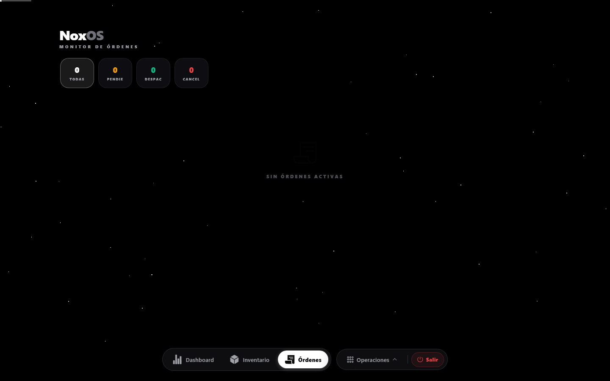

Comandas en segundos con fotos reales y selección instantánea
Elimina la lentitud y los errores al tomar pedidos en noches de alto flujo. Tu equipo visualiza la carta con fotos de alta resolución y busca cualquier producto al instante.
✓
Venta ágil de botellas completas o tragos individuales con cálculo automático de precios.
✓
División inmediata de cuentas por comensal o mesa con un solo toque.
✓
Arqueo ciego en cierre de caja: el cajero entrega el dinero físico a ciegas sin ver el saldo del sistema para evitar manipulaciones.
Cero filas en caja y atención hasta un 40% más ágil en horas pico.